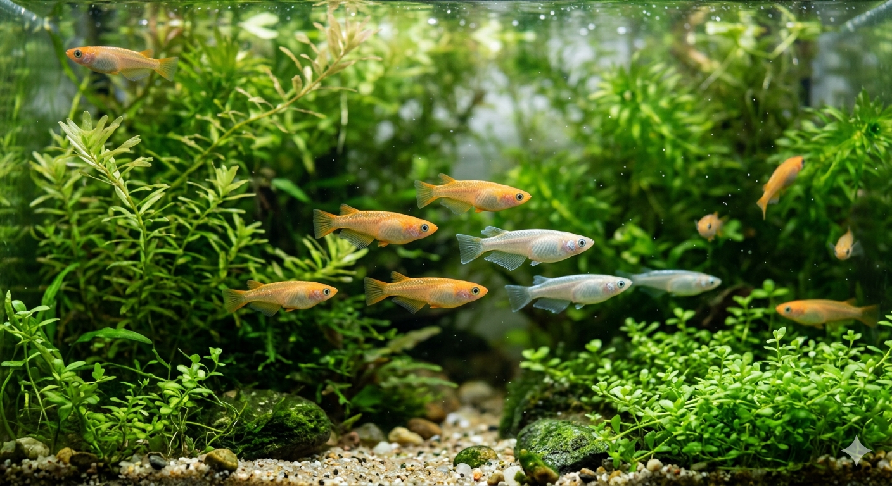
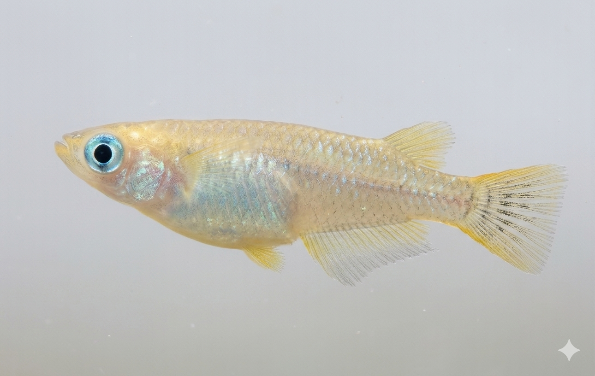

楊貴妃
鮮やかな朱赤が水草の緑に映える定番品種。屋外でも色が乗りやすく、はじめての一匹にも向いています。

Small Fish, Deep Life
透明な水、揺れる水草、朝の光。育てやすさだけでなく、観察するほど奥深いメダカの魅力を伝えるLPです。
START
Lineup
鮮やかな朱赤が水草の緑に映える定番品種。屋外でも色が乗りやすく、はじめての一匹にも向いています。
背中に走る青白い光が特徴。上見で美しさが際立つため、ビオトープや睡蓮鉢との相性が抜群です。
野趣のある落ち着いた色味。自然に近い雰囲気で、メダカ本来の生態を観察しやすい品種です。
Care Guide
容器にカルキを抜いた水を入れ、水草を浮かべます。メダカは静かな水を好むので、強い水流は避けましょう。
袋ごと水に浮かべ、温度を合わせた後、ゆっくりと容器に移します。初日はエサを与えず、環境に慣れさせましょう。
1日1〜2回、少量ずつ与えます。食べ残しは水質を悪くするので、必ず取り除きましょう。
2週間に1回、1/3程度の水を交換します。急激な水温変化を避けるため、新しい水は同じ温度に合わせます。
春産卵期。水草を豊かにし、栄養を十分に与えます。
夏直射日光を避け、水温が上がりすぎないようにします。
秋水温が下がり始めたら、エサの量を徐々に減らします。
冬冬眠に近い状態になるので、エサは極力与えず、静かに過ごさせます。
小さな命を育む、簡単な幸せ。
メダカ飼育は、初心者でも今日から始められる、日本の伝統的な癒やしです。
水草、底床、光の入り方まで整えると、メダカはもっと自然な表情を見せてくれます。
Ecology
春になり水温が上がり始めると、メダカは少しずつ活動を活発化させます。春から夏にかけて産卵を繰り返し、1回に10〜20個ほどの卵を産みます。卵は約10日でふ化し、新しい命が水のなかで生まれます。
夏はメダカが最も元気に過ごす季節です。プランクトンや小さな虫、水草などを食べながら成長し、穏やかな水面を泳ぐ姿は、日本の静かな水辺を彩る夏の風物詩でもあります。
秋になると水温が下がり始め、メダカの動きは徐々にゆっくりになります。冬の訪れを前に、体を整えながら、次の季節を越えるための準備を静かに始めます。
冬は川底や水草の影に身を寄せ、ほとんど動かずに寒さをしのぎます。自然の中では生命を維持しながら、約1年〜1年半の短い生涯を、四季の移ろいとともに歩みます。
Movie
YouTubeの埋め込みURLを差し替えるだけで、飼育風景・品種紹介・店舗紹介などの動画を掲載できます。
はじめての水辺づくり